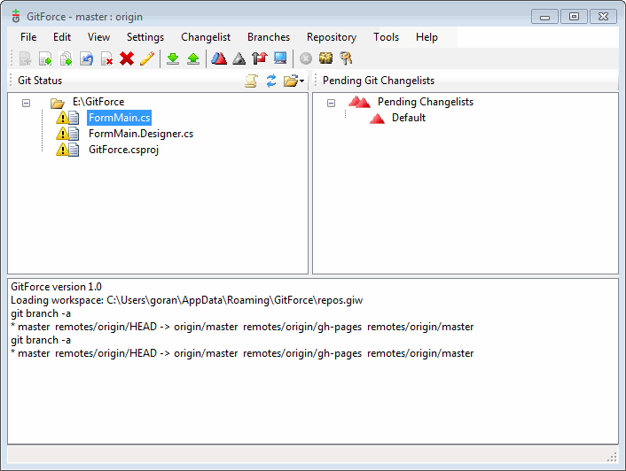
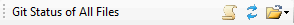
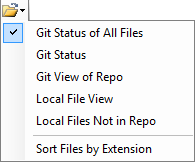
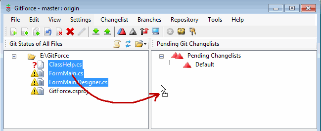
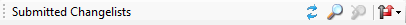
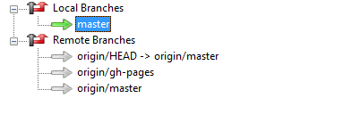
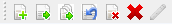
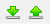
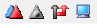
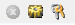

The left pane shows various views of the files on your local file system and also on the git database.

The buttons are to:
Depending on the view mode, the left pane will show one of several views:

The right pane shows pending and submitted changelists (git index and log), branches and also a list of repositories in the current workspace.
Changelist contains the git index. You can create a several changelists and move files between them. Context click with a right mouse button to see the list of available operations on a changelist, or click on the Changelist in the main menu.
You can add and update files in a changelist (index) by dragging them from the view pane and dropping them onto a changelist.

This view shows the log of changes for the current repo based on a specific branch.

The toolbar buttons on the right side will:
Branches show local and remote branches. You can double-click on a branch to switch to it. Right-clicking on the mouse will open a context menu with more options on a specific branch as will selecting the Branches menu from the main menu.

Repositories list a set of git repos available as part of the current workspace. The red arrow specifies a default repo which will be opened with this workspace, and the green arrow shows the current repo that the GitForce is using. Besides using the right mouse button to get the context menu, you can double-click on a repo to switch to it, or access all the options by selecting the Repository menu from the main application menu.
Status window displays status information and lists various commands that are being executed along with the result of execution.
Toolbar contains shortcut buttons for various operations. All of the operations may be accessed through the main menu as well, and many of the file operations may be performed by right-clicking on the mouse and also by drag and drop.
File operations on the files listed in the left pane:

As you select different files on the left pane, these shortcut buttons allow you to:
Pull from and push to a remote repo:

The right pane displays several different things. To change the right pane display, click on the corresponding toolbar button:

The remaining toolbar buttons are assigned to:
